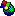
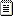

You can create
one or more Scanning templates to specify the
default scanningthe process of communicating a value (slot), typically to and/or from a front-end device (FED).
settings that are specified in the Tag scanning configuration
dialog, when scanning
the slots of agents in Adroit.
Note: The Connector

used by the Adroit DB Generator utility to connect to
the required source (3rd party application) determines whether
templates can be used or not.
Usage Example:You can create a scanning
template per front end device that provides the default communication
parameters required for this specific device. Each time an agent is scanned
to this device then these default settings can be used to save your users
engineering time.
Default templates:The _ScanningDefault template is added for you, providing the Adroit
default settings, which you can customise accordingly.
The slot (value) to be
scanned: if this slot is provided by the agent that you want to scan,
will be selected by default.
The Adroit default for this is the rawValue
slot.
The
rate at which the value should be scanned, in milliseconds. This
is the amount of time that will elapse before this value is communicated
to or from this Device.
The Adroit default for this is 1 second (1000 milliseconds)
The
applicable scanning deadband value, which can
prevent unnecessary communication, as any CHANGE in value LESS
than this deadband limit will NOT be communicated. In Adroit this is not
specified, by default (0).
The scan inhibit status,
if set this will prevent the scanned value from being changed by the Device
(FEDfront-end device, which is a device that is accessed directly by the user, such as a PLC or RTU.).
The Adroit default for this is OFF (0).
The output enabled status,
if set this will allow the scanned value to be written to the Device to
change the value in the FED. The Adroit default for this is OFF (0).
If
necessary, a scanning suffix can be specified that will be added to the
device-specific addresses.
This is not specified, by default (“”).
Note:
By default the slots of the scanning template are set to the Adroit default
settings.
To create a scanning template:
this creates a scanning template for the Scanning category that is listed beneath the Templates folder.
Press the Windows key and start typing in DB
Generator and select it from the list.
In the explorer type view on the left of this application:
Right click the Scanning category
within the Templates folder.
Select the Create template…
menu item.
Type
in the required Template name.
Tip:
Provide a brief name that makes it easy to identify the purpose of this
template.
Click the OK button.
This selects and adds this template

to
the bottom of the list of templates beneath the Scanning
category.
The scanning-specific slots are displayed in the right
hand pane, with their AdroitDefault value.
Customise the default scanning
parameters (slots) for this template, as follows:
Right
click the required Slot entry in the right hand pane.
Select
the Delete slot menu item.
WARNING! The selected
slot is IMMEDIATELY removed.
Note: If you delete one of these slots
then the Adroit default value will be used.
To sort the list of scanning templates:
by default each template is added to the end of the existing list of scanning
templates, it is possible to sort this list, alphabetically, in ascending
order, to make it easier for users to select the templates.
Press the Windows key and start typing in DB
Generator and select it from the list.
In the explorer type view on the left of this application:
Right click the Scanning category
within the Templates folder.
Select the Sort menu
item.
This rearranges the list of scanning templates alphabetically,
in ascending order.
Press the Windows key and start typing in DB
Generator and select it from the list.
In the explorer type view on the left of this application:
Right click the required
scanning template in the Scanning category in the Templates folder.
Select the Delete template…
menu item.
The selected template is removed from the list of templates.
For more details about the communicating to front
end devices in Adroit, see Scanning
Overview.
For more details about how to scan values in Adroit
using the Tag
scanning configuration dialog, see How to Scan a Tag.
About
the Adroit DB Generator: an overview of the Adroit DB Generator utility
which creates Adroit agent databases (.WGP files) from information stored
in 3rd party applications, such as front-end devices.

 settings that are specified in the Tag scanning configuration
dialog, when scanning
the slots of agents in Adroit.
settings that are specified in the Tag scanning configuration
dialog, when scanning
the slots of agents in Adroit. the following scanning parameters:
the following scanning parameters: key and start typing in DB
Generator and select it from the list.
key and start typing in DB
Generator and select it from the list.